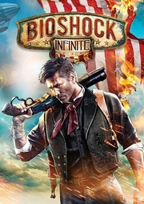

|  | |
| Tiempo de juego | No Jugado |
| Última actividad | Nunca |
| Añadido | 11/6/2024 14:41:31 |
| Modificado | 11/17/2024 15:02:04 |
| Estado de finalización | No Jugado |
| Librería | Playnite |
| Fuente | 1 TB 1 |
| Plataforma | Macintosh Microsoft Xbox 360 PC (Linux) PC (Windows) Sony PlayStation 3 |
| Fecha de lanzamiento | 3/26/2013 |
| Puntuación de la Comunidad | |
| Puntuación de la Crítica | 94 |
| Puntuación de usuario | |
| Género | First-person shooter |
| Desarrollador | Irrational Games |
| Editor | 2K |
| Característica | Single-player |
| Enlaces | Wikipedia Official website |
| Tag | [Game Engine] Unreal Engine 3 [People] artist: Scott Sinclair [People] composer: Garry Schyman [People] director: Ken Levine [People] producer: Adrian Murphy [People] programmer: Christopher Kline [People] writer: Ken Levine |
BioShock Infinite is a first-person shooter video game in the BioShock series, developed by Irrational Games and published by 2K. Infinite was released worldwide for the PlayStation 3, Windows, Xbox 360, and OS X platforms in 2013. The game is set in the year 1912 and follows its protagonist, Booker DeWitt, who is sent to the airborne city Columbia to retrieve Elizabeth, a young woman held captive there. Booker and Elizabeth become involved in a class war between the nativist Founders that rule Columbia and the rebel Vox Populi, representing the city's underclass. Elizabeth possesses the ability to manipulate "Tears" in the space-time continuum, and Booker and Elizabeth discover she is central to Columbia's dark secrets. The player controls Booker DeWitt throughout the game, fighting enemies and scavenging supplies, while the computer-controlled Elizabeth provides assistance.
After the 2007 release of BioShock, Irrational Games and creative director Ken Levine were initially uninterested in creating a sequel, but they later renegotiated with 2K to produce another BioShock game. Irrational based the game's setting on historical events at the turn of the 20th century, such as the 1893 World's Columbian Exposition, and based the story on the concept of American exceptionalism while also incorporating influences from more recent events at the time such as the 2011 Occupy movement. The relationship between Booker and Elizabeth became central to the story, with the team working to make Elizabeth feel like a real character rather than a computer-controlled sidekick.
The game's development took five years and involved hundreds of employees at Irrational, in addition to support studios. The development process was troubled, with Levine's management style resulting in wasted work and missed deadlines. Outside help was brought in to make sure the game shipped. BioShock Infinite was supported post-launch with downloadable content, including the story expansion Burial at Sea, which links Infinite's story to that of the original BioShock game.
BioShock Infinite received critical acclaim, with praise particularly directed at its story, setting, visual design, and art direction. It is widely considered one of the greatest video games ever made and like its predecessors an example of video games as an art form. It has sold more than 11 million copies worldwide. Infinite was released on PlayStation 4, Xbox One, and Nintendo Switch as part of BioShock: The Collection.
BioShock Infinite is set in 1912 and takes place in a floating steampunk city-state in the sky called "Columbia", named for the female personification of the United States. The city of Columbia was founded by self-proclaimed prophet Zachary Hale Comstock, and funded by the United States government as a floating world's fair and display of American exceptionalism. Tensions rose between Columbia and the government after the city intervened in the Boxer Rebellion, and Columbia ultimately seceded from the United States and disappeared into the clouds. Comstock transforms the city into a theocratic police state, with Comstock worshipped as a prophet, and the Founding Fathers of the United States venerated as religious icons. Institutional racism and elitism are widespread in the city, with minorities serving as a labor underclass of Columbia. By the events of the game, Columbia is on the verge of civil war; the Founders of Columbia are opposed by the Vox Populi, a resistance group led by Daisy Fitzroy who fight for the rights of the marginalized.
Columbia is home to "Tears" in the fabric of space-time. These Tears reveal alternate universes. Some individuals exploit the insight offered by the tears to create new weapons and technologies, while several others replicate futuristic media heard from the Tears, bringing anachronistic elements into Columbia.
The player controls protagonist Booker DeWitt, a disgraced member of the Pinkerton National Detective Agency scarred from a life of violence. Faced with mounting gambling debts, he is sent to Columbia to find a young woman, Elizabeth, who has the ability to open Tears. Elizabeth has been confined since childhood in the city and guarded by Songbird, a large, robotic bird-like creature who has been both her friend and her warden. Two individuals, Robert and Rosalind Lutece, direct Booker to Columbia and appear throughout his travels. Though they appear as twins, they are revealed to be the same person from two different realities, having figured out how to communicate through and subsequently cross realities.
In July 1912, Booker DeWitt arrives in Columbia, where he is pursued by authorities, who recognize him as a prophesied "False Shepherd" who will corrupt Elizabeth and overthrow Columbia. Freeing Elizabeth from her tower, Booker narrowly evades Songbird. Commandeering an airship, Booker promises to take Elizabeth to Paris; when she realizes they are going to New York City to fulfill Booker's debts, Elizabeth knocks him out and flees. Booker awakens to find the airship under the control of Daisy Fitzroy, who offers to return the ship if Booker helps her arm the Vox Populi.
Booker and Elizabeth join forces to secure weapons from a local gunsmith. Traveling through Tears, they arrive in a world where Booker is a Vox Populi martyr and open warfare has erupted in Columbia. Elizabeth kills Fitzroy to prevent her from executing a Founder boy. Songbird attacks the duo as they try to flee Columbia, and their airship crashes back to the city. Elizabeth and Booker discover a conspiracy behind the city's founding: Elizabeth is Comstock's adopted daughter, whom he plans to groom into Columbia's leader after his death. Comstock killed his wife and the Luteces to hide the truth, and installed a siphon in Elizabeth's tower to limit her power.
Elizabeth is recaptured by Songbird. Pursuing her, Booker is brought forward in time to New Year's Eve of 1983 by an elderly Elizabeth as Columbia attacks New York City. This Elizabeth returns Booker to 1912 with information on controlling Songbird, in hopes he can save her younger self and erase the torture and brainwashing she suffered. Booker rescues Elizabeth, and the pair pursue Comstock to his airship. Comstock demands that Booker explain Elizabeth's past to her, and the two begin to argue; an enraged Booker drowns Comstock in a baptismal font. Booker denies knowledge of Elizabeth's past, but she asserts that he has simply forgotten. Booker and Elizabeth direct Songbird to destroy the Siphon, unlocking Elizabeth's full powers.
Elizabeth opens a Tear and transports them to the underwater city of Rapture. The newly aware Elizabeth explains there are countless alternate lighthouses and versions of Booker and Elizabeth; their reality is one of an infinite number depending on their choices. She shows that Robert Lutece approached Booker on behalf of Comstock to acquire Booker's infant daughter, Anna DeWitt, in exchange for erasing his debts, as Comstock was rendered aged and sterile as a result of exposure to Tears. Booker attempted to take Anna back from Comstock, but the closing Tear severed Anna's finger. Comstock raised Anna as his own daughter, Elizabeth; her severed finger, which caused her to exist in two realities simultaneously, is the source of her ability to create Tears. Robert Lutece, angry at Comstock's actions, convinced Rosalind to help him bring Booker to the reality where Columbia exists to rescue Elizabeth.
Elizabeth explains that Comstock will always remain alive in alternate universes since the Luteces have enlisted the Bookers of numerous different universes to try to end the cycle. Since stopping Comstock requires intervening in his birth, Elizabeth takes Booker back in time to a baptism he attended, in the hope of atoning for the sins he committed at Wounded Knee. She explains that, while Booker changed his mind, the Bookers in alternate universes who accepted the baptism were reborn as Zachary Comstock. Booker, joined by other universes' Elizabeths at the baptism, allows them to drown him at the moment of his choice, preventing Comstock's existence. One by one, the Elizabeths begin to disappear, the screen cutting to black on the last.
In a post-credits scene, a Booker awakens in his apartment on October 8, 1893. He calls out for Anna and opens the door to her room before the screen cuts to black.
BioShock Infinite is a first-person shooter with role-playing elements. Infinite adapts the gameplay formula of BioShock, with weapons, powers, and upgrades often functioning similar as those in the earlier game, albeit named differently. The player may carry only two weapons at a time, and can collect other weapons and ammunition from defeated enemies or the environment.: 8 In addition to guns and melee attacks, the player can use superpower-bestowing Vigors; these include the ability to shoot lightning, disable enemies by launching them into the air, or controlling enemies or machines. Vigors can also be laid on the ground as traps.: 9–10 Vigors require Salt, the equivalent of magic points, to power the abilities.
Booker has health and a damage-absorbing shield; the shield automatically regenerates out of combat, while health must be replenished with medical kits or food.: 4 If Booker dies, the player revives in a safe area at the cost of money, while local enemies are also partially healed. Items called Gear grant passive abilities that can improve the player's strength or damage resistance. A piece of Gear attaches to one of four slots; only one piece of Gear can be affixed to a slot at a time, with extras stored in the player's inventory.: 14 Player attributes can also be improved by finding Infusions, which upgrade the players' shield, health, or Salt meters.
The player is opposed by enemies representing the Founders and the Vox Populi. These foes range from normal infantry to Heavy Hitters, more formidable enemies that act as mini-bosses throughout the game. Armed automatons scattered throughout Columbia act as a security defense system for the city.: 11–14 Columbia is filled with large, open spaces that offer players freedom in how to approach enemy encounters. The city is traversed on foot or via the Sky-Line, a rail system that Booker and enemies ride via special hooks. Booker can jump on, off, and between Sky-Line tracks at any time and fire one-handed weapons while riding them. The hook also serves as a melee weapon, capable of performing executions on weakened foes.: 6
Booker is aided throughout the game by Elizabeth, a computer-controlled non-player character. Elizabeth requires no protection and assists during combat by tossing helpful items to Booker as needed. She can also be directed to open Tears, bringing in items or pieces of the environment, such as medical kits or a ledge for higher ground. Elizabeth can pick locks using her hairpin to open doors or find useful items. Cash, food, medical kits, ammunition and Salts can be found scattered throughout the game's environments. Vending machines can be used to buy supplies and powerful upgrades for weapons and Vigors. Optional side-missions are also available, where the player must unlock safes or decode hidden ciphers; completing them rewards Booker with supplies and upgrades. Audio logs (Voxophones) and film projectors (Kinetoscopes) scattered through Columbia expand on the characters and events of the game.
Infinite has four difficulty levels: Easy, Normal, and Hard difficulties are available to start. After beating the game on a lower difficulty level or inputting the Konami Code in the main menu, the hardest "1999 Mode" is unlocked. Enemies are much tougher, the player's navigational aid and aim assist is removed, resource management is much more crucial to survival, and death is more punishing.
Developer Irrational Games (then 2K Boston) and publisher 2K Games released BioShock in 2007 to critical and commercial acclaim. In late 2007, 2K Games approached Irrational about a sequel. Exhausted from shipping BioShock and wary of repeating themselves by returning to the same property, staff and studio head and creative director Ken Levine were uninterested in immediately returning to another BioShock game. Instead, Irrational and 2K struck an agreement that saw select personnel from Irrational form a new studio, 2K Marin, to start work on a sequel. Levine and Irrational would instead join development of a game in the XCOM franchise.: 48–50 By contract renewal negotiations in the middle of 2008, however, Levine had reportedly lost interest in the XCOM project and wanted to return to BioShock. Levine's lack of interest was matched by disappointment within the studio's ranks that another company was making the next BioShock, not Irrational. While 2K Marin continued working on BioShock 2 and Irrational's Australia office (later 2K Australia) continued work on XCOM, the main Irrational team would draw up concepts for the next BioShock game.: 51–2
Concept work on Infinite began in February 2008;: 54 2K granted Irrational a great degree of creative and financial freedom to develop the next game; Irrational considered several settings for the game, including reusing Rapture or setting the story in the Renaissance period, before deciding on the floating city of Columbia. While the setting of a floating city would remain consistent, the time period, characters, and the story itself remained undefined as the team churned through different ideas. Designers and artists would sometimes spend months developing ideas that would be scuttled within minutes after priorities shifted or Levine changed his mind.: 55–6 Levine's creative process was described as brilliant but time-consuming, as he focused on very small details; one department within Irrational ran dress rehearsals for any meetings with Levine. At the same time as the story mode was undergoing constant revisions, a set of multiplayer modes was also being designed. The first mode, Border Control, was a tower defense game intended to be set within the game's world. The other multiplayer offering, code-named Spec-Ops, would have been a cooperative mode with up to four players. Matches would take place on maps that would evolve after release, using environmental storytelling to depict Columbia's evolving civil war.
Irrational began hiring and expanding its team. One notable missing person from the original BioShock team was Jon Chey, who had worked with Levine since their days at Looking Glass Studios in the 1990s, and who headed the Australian branch of Irrational. The two developers' differing aptitudes meant that the two teams had what Chey called a "synergy", with Chey's team emphasizing technical ability while Levine's team was more creative-minded. Dissatisfied with the questions of what Irrational's next project would be and dissatisfied with the dynamics of a large company, Chey left 2K in 2009. Chey's departure meant Levine had to shoulder more production-focused work in opposition to his creative focus, and the staff buildup in Levine's estimation "shattered" the company culture in the process. "Managing 30 or 40 people where you know everybody's name is a very different process than managing 150 people. You walk by people in the studio and you don't know who they are," he recalled.
Irrational worked in secrecy on Infinite for two-and-a-half years prior to its announcement, teasing the game with the moniker "Project Icarus". The game was announced at a press event on August 12, 2010, in New York City, where journalists were shown a teaser trailer and Levine outlined the basic story of the game; these were followed by several demos and showcases of the game at events in 2011.: 57–60 The 2011 Electronic Entertainment Expo demo was intended to communicate what kind of game Infinite would be not only to players, but also to the staff itself. While the demo was highly praised, it was also not an indicator of the game's current state; the demo was carefully rehearsed and encounters heavily scripted, as the game's artificial intelligence (AI) was not in a functional state. The game was still undergoing a troubled development. While the big picture elements of the story were now locked, Levine continued to make changes to large parts of the game at a whim. Despite the expanding cost of development and additional staff, the game was not getting closer to completion.: 59–61
Within Irrational, there was concern that the game would never be finished. The game's ship date repeatedly slipped and staff left the company. Jordan Thomas, a former BioShock level designer who had been creative director for BioShock 2, was hired in January 2012 to get the project back on track. Levine and Thomas created a roadmap for the game, deciding on cuts to reduce the scope of remaining work; this included the entirety of the multiplayer feature, with the staff reallocated to the single-player portion of the game.: 59 Thomas was followed in March 2012 by game producer Don Roy. Experienced with closing out games at publishers like Sony and Microsoft, Roy said that there was no playable game available for him to try when he asked. Roy created a new workflow to bring order to Infinite's disorganized and inefficient project management. Irrational hired Rod Fergusson as vice president of development in August 2012. Fergusson had a reputation as someone who made tough decisions to ship difficult games, and reined in Levine's worst tendencies; Irrational staff recalled Levine worked best when under constraints, and that without Fergusson the game might not have shipped.: 61–2 Thomas left Irrational in November, with the game on track to release.
To finish the game, Irrational entered into a period of sustained crunch; one staffer estimated he spent most of the final year of development putting in 12-hour workdays.: 62 Content such as Vigors, Tear mechanics, weapons, locations, characters, and other enemies, were cut from the game—enough material for five or six whole games, according to one developer. After the game was released to manufacturing, more than a dozen staff voluntarily left Irrational, with the number accelerating as the game's post-launch content began development. The game ultimately took roughly five years to make, and involved a team of around 200 from Irrational in addition to support from outside studios. Infinite would be the last game Irrational would make in the series, as much of Irrational's staff was fired in 2014 and the studio rebranded as Ghost Story Games. The intellectual property would remain with 2K Games.
Irrational artists had been reading Erik Larson's 2003 book The Devil in the White City, which prominently featured the 1893 World's Columbian Exposition, and they turned Levine onto the book as inspiration. The setting was inspired by turn-of-the-century American culture and propaganda, with some of the artwork around Columbia adapted from historical posters. By selecting the hypothetical date of July 4, 1912, the team identified films to draw imagery from, like The Music Man, Meet Me in St. Louis, and Hello, Dolly, which exhibited ideal views of Americana at the turn of the 20th century. Other sources of inspiration for the game's art included photographs from before and after the 1906 San Francisco earthquake, and from Sears-Roebuck catalogs.
The bright, open-air environments of Columbia presented a challenge to the team to keep aspects of the horror genre within the game; the developers took inspiration from Stanley Kubrick's The Shining and David Lynch's Blue Velvet in how to transform bright, sterile environments into something frightening. While initial designs of the flying city were darker and closer to Art Nouveau, Irrational felt this made the game world too claustrophobic and too similar to Rapture. Instead, they decided on a brighter, expansive architecture and color scheme. Irrational designed the vertical and open-air spaces of Columbia to provide more opportunities to include various types of combat compared to the tight quarters of Rapture. 2K Marin assisted in building out the architecture and details of Columbia, given the much larger scope of the levels than previous BioShock games.
While the floating city setting was developed early, the name "Columbia" and the thematic ideas of American exceptionalism that would inspire the story did not come about until eight months before the game's reveal. The game also incorporated influences from more recent events at the time such as the Occupy movement in 2011, which inspired how the Vox Populi group would grow from its haphazard beginnings. Levine reflected that despite the game's earlier setting, many of the modern day political turmoil calls back to similar tactics and behavior used in the early days of America's democracy, and thus provided a means to flesh out these aspects within the game.
Central to the game is the relationship between the player character, Booker, and the AI companion, Elizabeth. Unlike BioShock's Jack and BioShock 2's Subject Delta, both of whom are silent protagonists, BioShock Infinite's protagonist, Booker, was given his own voice and identity. Elizabeth, a crucial element of the game, was designed as a character which could not only be a useful AI companion to the player but a real partner with a significant emotional bond as well. The voice actors for Booker and Elizabeth—Troy Baker and Courtnee Draper, respectively—helped refine the story and their characters. Levine did not provide the actors with full knowledge of the story in order to help them develop their characters' relationship in a more natural manner.
In the early development of Infinite, Elizabeth was designed to be more of a useful tool than a partner; she would perform tasks like picking locks that the player could not, but otherwise was not a major part of the experience. After Irrational saw players react favorably to Elizabeth in the E3 2011 demo, they expanded her role and abilities to make her a bigger part of the game. The approach to Elizabeth was inspired by the character Alyx Vance from Half-Life 2 as well as Monkey and Trip in the game Enslaved: Odyssey to the West. Irrational wanted to avoid giving Elizabeth any of the same tools that the player had, such as a gun. Instead, they gave her helpful abilities such as tossing supplies to Booker or deciphering codes to connect her more emotionally to the player. She also served to help Irrational avoid tropes of the genre, such as receiving information over a radio or from someone on the opposite side of a window. Elizabeth's relationship to the Songbird was inspired by Levine's experience with a friend in an abusive relationship. Her design and costume was designed so players could recognize her from a distance given the open-space nature of the game and limited resolution, with the color scheme inspired by that of superheroes.
The time period's setting inspired the incorporation of quantum theory by Albert Einstein, Max Planck, and Werner Heisenberg that would lead to the Many Worlds Theory. Irrational consulted with physicist Mackenzie Van Camp to ground the game's science fiction in real quantum mechanics. Levine promised that the ending of Infinite was "like nothing you've experienced in a video game before", and wanted to avoid the issue BioShock had where the story lost its momentum in its final third.
The team had to revolutionize their previous work on the BioShock game in order to realize Columbia, including both indoor and outdoor settings that take place thousands of feet above the ground. The modified Unreal Engine 2.5 used for BioShock was inadequate for their vision. Instead, they used Unreal Engine 3, modifying it with their own lighting engine and means to simulate the movement and buoyancy of the buildings. The development team found that the implementation of open spaces created new gameplay options for the player, such as deciding between long-ranged attacks or finding a means to move in for short-range or melee combat.
The developers noticed that in BioShock, once players equipped specific plasmids and weapons, they could complete the game without having to alter their loadout. Irrational wanted instead to create situations through Infinite's weapons and powers that would force players to change their tactics. The vertical and open-air spaces of Columbia provide more opportunity to include various types of combat compared to the close-ranged limits of Rapture within the first BioShock. The team developed a variety of enemies that would have certain strengths and weakness that would force the player to experiment and work with all their available tools given to them. They also wanted moral choices in the game to be less obvious and with initially ambiguous results.
Early versions of the games had included Nostrums as gameplay elements. Nostrums would have made permanent changes to the character and could not be removed once used. The Nostrum system was scrapped in favor of using gear, as they found that the system was too similar to other ones that the player would have available in equipping their character, compared to the gear option. Similarly, earlier demonstrations of the game did not use Salt to power vigors, but instead each vigor would have a limited number of uses before it was exhausted. While more could have been found around the game's environment, the player would have only been able to carry a limited number of vigors into battle, with more powerful vigors containing fewer charges. In early builds of the game, as many as 16 enemies could be on-screen at once, but this was dialed back to just six, a constraint which impacted the game design. Now, each individual enemy had to be tougher, creating "bullet sponge" enemies.
The AI for Elizabeth was a major technical challenge for Irrational; they wanted her to display realistic-feeling behavior in contrast to games where such companions are either highly scripted or are simplistic. The developers used the AI routines of the roving Big Daddy and Little Sister characters from BioShock as a starting point for improving Elizabeth, giving her the tendency to look and move around like a real person instead of a robotic non-player character that either fought the player or did nothing. The developers looked to the banter between characters in the Uncharted series by Naughty Dog as an inspiration. Elizabeth's responses are driven by a player's action or are independent of them, with the levels filled room by room with elements that Elizabeth could react to. Actions are performed based on a number of factors, including whether the player is near and looking at Elizabeth, and the current tension of the game. The game also monitors the player's actions to try and keep Elizabeth out of the line of fire. Cutting Elizabeth from the game was considered during development because of the difficulty in programming her, but Levine insisted she remain.
The original score for BioShock Infinite was composed by Garry Schyman, who had previously contributed the scores for BioShock and BioShock 2. The score was partly inspired by Jonny Greenwood's score for There Will Be Blood and Paul Buckmaster's score for 12 Monkeys. Because of the differences from previous BioShock games—a different time period and focus on characters—Schyman opted for a fresh approach to the score for Infinite. Schyman worked on the score over an extended period of time due to the game's long development cycle. Schyman did not limit himself to the music of the period, with the game's 1912 setting influential, but not determinative. Originally working with a more orchestral approach, Schyman later used very intimate small string ensembles with anywhere from three to ten players to compose the game's relatively simpler score.
Choosing the licensed music for Infinite was more challenging than BioShock. The first game was set in 1960, and it was easy to acquire musical pieces representative of the era. Levine felt that the contemporary 1910s music of Infinite's setting was "not very listenable" to a modern listener. Consequently, the development team had to research more extensively for satisfactory music. The developers did not strictly adhere to exact historical timeframes when choosing. The game also features contemporary songs, such as "God Only Knows" by The Beach Boys and "Girls Just Want To Have Fun" by Cyndi Lauper, recorded in an anachronistic ragtime style. In-game, the covers are presented as compositions heard through Tears in Columbia and recorded by Columbia's own artists. These covers were arranged by Scott Bradlee, a musician who had drawn Irrational audio lead Jim Bonney's attention for his music mashups.
The game was teased with several trailers, including a set that that presented the history of Columbia in the style of shows like In Search Of.... The official game cover was revealed by Irrational Games in early December 2012. Journalists and players were critical of the art, as it lacked Elizabeth and any of the unique elements from the game. Levine responded that the cover was designed to appeal to a casual player; Irrational had a poll to allow players to decide what the reversible cover art should be, while alternate cover art were provided as downloadable files that players can print and use. For the cover and other parts of the game's promotion including live-action commercials, the directors hired Anna "Ormeli" Moleva, a Russian cosplayer that had earlier attracted attention for her recreation of Elizabeth back in 2011. The game's release was accompanied by various tie-in merchandise, including replicas and figurines, a board game based on the game called BioShock Infinite: The Siege of Columbia, and a prequel novella, Bioshock Infinite: Mind in Revolt.
BioShock Infinite was released worldwide for the PlayStation 3, Windows, and Xbox 360 platforms on March 26, 2013. Aspyr later published and ported Infinite to the MacOS platform on August 29, 2013. Two special editions were released alongside the game, for each release platform. The Special Edition includes an art book, a propaganda poster, a mini-figurine of the Handyman, a keychain, and the game's soundtrack, along with in-game codes for special powers and, for consoles, additional themes. The Ultimate Songbird edition, in addition to the above, includes a Songbird statuette, designed by Irrational's Robb Waters.
Two major pieces of downloadable content were released by Irrational for the game. The first piece is Clash in the Clouds, a non-story arena-based combat mode where the player is faced with increasingly difficult waves of enemies on various maps based on in-game settings. It was released on July 30, 2013. The second piece is Burial at Sea, a story-based expansion set in Rapture that links Infinite's story to that of the original BioShock game. It consists of two episodes, with the first one released on November 12, 2013, and the second one on March 25, 2014. BioShock Infinite: The Complete Edition, bundling BioShock Infinite with Clash in the Clouds and Burial at Sea, was released on November 4, 2014. A Linux port was announced on December 6, 2014.
BioShock Infinite along with Burial At Sea was remastered and released for the PlayStation 4 and Xbox One as part of BioShock: The Collection in September 2016; the Windows version of Infinite, at this time, was considered already at par with the console version and did not receive any additional updates. A standalone version of BioShock Infinite (including Burial at Sea) as well as The Collection was released on the Nintendo Switch on May 29, 2020.
On September 3, 2022, Bioshock Infinite along with its predecessors was updated with the "Quality of Life Update" which added a launcher developed by 2K Games. This update was met with heavy criticism from fans of the game as it broke compatibility for Linux and Steam Deck users. The update was also criticized for serving no purpose except for adding telemetry, and impacting the game's performance.
In its first week of release, BioShock Infinite was the best-selling game on Steam's digital Top 10 PC Charts. In the United States, BioShock Infinite was the top-selling console game for March 2013, with more than 878,000 units sold; these figures do not include digital sales such as through Steam. Take-Two Interactive reported that the game had shipped 3.7 million copies to retail by their May 2013 financial report, and surpassed 4 million in late July. According to Take-Two Interactive, the game has sold more than 6 million copies as of May 2014, and 11 million a year later.
During the first week of sales in the United Kingdom, BioShock Infinite debuted as the number one selling PC game, and the best-selling game on all available formats, topping the UK PC Retail Sales and the UK All Formats video games charts. In the game's opening week in the UK, its Xbox 360 version ranked No. 1, PlayStation 3 version ranked No. 2, and the PC version ranked No. 9 in the UK Individual Formats video games charts, due to 64 percent of its sales being on the Xbox 360, 31 percent on the PlayStation 3, and 5 percent on PC. As of April 2, 2013, it is currently the second biggest launch of 2013 in the UK after Tomb Raider, and is the biggest UK game launch in the BioShock franchise's history with approximately 9000 more sales than BioShock 2. During the game's second week in the UK, despite a 75 percent drop in sales, BioShock Infinite maintained its lead in the UK All Formats charts. In its third week, Infinite became the first 2013 game to top the UK charts for three weeks in a row.
BioShock Infinite received critical acclaim upon release, with reviewers particularly praising the story, setting and visual art design. Aggregating review website Metacritic summarized critical consensus as "universal acclaim", with the game netting score of 93–94/100 across its released platforms. BioShock Infinite was the third-highest rated video game of 2013 across all platforms on the site, behind Grand Theft Auto V and The Last of Us. Consensus among several critics was that BioShock Infinite was one of the best games of the seventh generation era of video game consoles, with IGN's Ryan McCaffery praising the game as "a brilliant shooter that nudges the entire genre forward with innovations in both storytelling and gameplay." Joe Juba of Game Informer stated that Infinite was among the best games he had ever played, while PlayStation Universe's Adam Dolge called it "one of the best first-person shooters ever made." Identifying it as a "masterpiece that will be discussed for years to come", Joel Gregory of PlayStation Official Magazine concluded that Infinite was the latest game to join the hallowed ranks of Half-Life, Deus Ex and BioShock as "the apotheosis of the narrative-driven shooter."
Many critics favorably compared BioShock Infinite to the original BioShock, with some even believing that Infinite had surpassed it. Entertainment Weekly's Darren Franich stated that "if BioShock was The Godfather, then BioShock Infinite is Apocalypse Now", with Adam Kovic of Machinima.com calling them "two similar-yet-separate games that can co-exist and remain equal in quality."
Wide acclaim was directed to the story, with several critics calling it among the best in video gaming. The story's exploration of mature themes was well received, with Time's Jared Newman praising its ability to prompt commentary and critiques from players as the game's true value. Several critics, including Adam Sessler of Rev3Games, also praised BioShock Infinite's storytelling, noting that its ability to finesse player agency and interaction resulted in a narrative that could only work in a game. The story's twist ending was mostly praised, with several critics predicting that it would provoke debate, and that it would leave a deep impression on players, prompting them to replay the game. It was also generally agreed that Infinite's ending was an improvement over the original BioShock's, with Gregory explaining that, unlike its predecessor, Infinite never lost momentum after revealing its twist. Some critics who overall praised the ending did concede that it suffered from plot holes and leaps in logic, with Edge calling it "a finality that doesn't make sense within the universe the game has created." Several articles have since been released attempting to explain the game's ending.
Critics particularly acclaimed the city of Columbia as the setting of the game, with Arthur Gies of Polygon stating that it was "one of BioShock Infinite's greatest assets." Columbia was praised by some critics as one of video games' best settings, with Destructoid's Jim Sterling explaining that, unlike BioShock 2, Infinite made a wise decision in abandoning Rapture "for an all new story in an all new setting, introducing us to the cloud city of Columbia." The setting's visual art design drew praise, with Columbia being described as beautiful and gorgeous. Lucas Sullivan of GamesRadar went on to describe Infinite as "one of the most visually captivating games ever made." The setting's attention to detail was also well received, with critics impressed at how diverse the game's environments were, and how no two of Columbia's many different areas ever felt alike. Critics also enjoyed how the game encouraged them to explore more of Columbia, with Juba explaining "whether you're looking at a piece of propaganda, listening to an audio log, or participating in a horrifying raffle, almost everything you encounter contributes to your understanding of the floating world."
Elizabeth's role in the gameplay and narrative received wide praise. Her implementation as an AI partner for the player-controlled Booker was described by Sullivan to be "downright ingenious" and was stated by some critics to be the main aspect that separated Infinite from its predecessors. Special praise was given not only to Elizabeth's ability to take care of herself in combat, but also for actively assisting the player by finding ammo and health, and opening Tears. Critics also acknowledged Elizabeth as not just a combat partner, but a companion that invoked an emotional response from the player. Eurogamer's Tom Bramwell felt that the game "creates a familial bond" between Elizabeth and the player, with Sullivan stating that she felt like "a friend." McCaffrey explained that Elizabeth's presence in the game provided motivation and emotional depth, something he believed the original BioShock lacked. Edge called Elizabeth "a technical triumph, the most human-seeming AI companion since Half-Life 2's Alyx Vance", with Sullivan stating that her "behavior makes you forget she's a video game character." Several critics also praised Elizabeth's relationship and interactions with Booker, believing that they formed the core of the game's story. Mikel Reparaz of Official Xbox Magazine explained that "the evolving interplay between [Elizabeth] and Booker is the heart and soul of what makes BioShock Infinite such an involving, memorable experience."
The voice cast was well received, with Troy Baker and Courtnee Draper being particularly praised for their performances as Booker and Elizabeth, respectively. The audio and soundtrack also received positive responses, with Cheat Code Central's Josh Wirtanen stating, "from the absurdly talented voice actors to the so-happy-it's-actually-creepy music selection to set the mood, this game sounds fantastic from start to finish."
Although the gameplay's combat was mostly well received and praised, it was the most polarizing aspect of the game, with The Daily Telegraph's Tom Hoggins noting "the gunplay is far from Infinite's most satisfying component." Nevertheless, critics opined that the game's gunplay and shooting was an improvement over its predecessors. The game's expanded environments were well received, with Edge noting they encouraged the player to think more tactically and improvise. Tom Francis of PC Gamer and Hoggins felt that Infinite's overall combat was an improvement over the previous BioShock games largely due to the dynamism of the expanded environments. The addition of the Sky-Line received special praise from critics. Sullivan felt that the Sky-Line "delivers a new FPS experience entirely", while Gregory hailed it as a "real game-changer". Critics also enjoyed the Vigors, weapons, and upgrades, with McCaffrey praising the game's "myriad combat options".
In contrast, the gameplay was criticized by some as monotonous and repetitive, with VideoGamer.com's Steven Burns explaining the game's lack of real sense of escalation in either abilities or enemies made combat very tiresome and grating. Some also noted that Infinite had regressed into a simple shooter compared to the role-playing System Shock games, with Newman stating that "combat feels too constrained as a result." There were also complaints that the middle portion of the game was padded by gameplay flaws. Critics expressed disappointment that the game limited the player to only two weapons, with Reparaz feeling that this, along with the lack of outlandish upgrades, made Infinite's "less inventive" combat "not quite up to BioShock's high standards." Criticism was also directed at the combat's "meager" death penalty, with complaints that this resulted in a less challenging game.
Infinite's graphic depiction of violence generated substantial discussion. Polygon's Chris Plante argued the violence in the game could repel players who are more interested in the game's themes and narrative. He believed that unlike films that are based on violence as part of their themes, Infinite does not attempt to rationalize its violence, claiming the "magnitude of lives taken" and the "cold efficiency in doing so" was "unfamiliar to even the most exploitative films." Kotaku's Kirk Hamilton agreed, stating that while violence is a common theme across video games, "[the] ridiculous violence stands out in such sharp relief when placed against the game's thoughtful story and lovely world." Hamilton acknowledged that Infinite likely would have been difficult to sell at the mass market if it lacked the first-person shooter elements, but still said that the violent kills felt "indulgent and leering" and unnecessary for the game. Cliff Bleszinski, the creative lead of Gears of War, a series Bleszinski acknowledges as being purposely violent, agreed with these sentiments, saying he "felt the violence actually detracted from the experience". Dean Takahashi of VentureBeat felt that the game's nature as a first-person shooter limited its audience appeal due to the extreme violence inherent in the genre.
In comparison, Rus McLaughlin of VentureBeat stated that the sudden onset of violence at the carnival at the start of the game was a necessary element to show that "Columbia is not perfect. It's ugly, xenophobic, and ready to explode." McLaughlin also considered the message carried by Infinite about the extreme nature of the violent acts Booker commits to be tied to his redemption by the end of the game. Similarly Jim Sterling from Destructoid considered the game's violence justified because the game's story is about violence itself. They believed that having a non-violent option would go against everything natural to the game itself and "those asking for a non-violent BioShock Infinite are asking for a different game entirely."
Levine defended the game's depiction of violence, stating that using violence as a narrative device was as old as storytelling itself and that it was "a part of the storyteller's toolkit". He went on to say that art had a responsibility to authentically replicate and depict violence. He later explained that he felt "the reaction to the violence [in BioShock Infinite] is more an expression of people building confidence in the industry's ability to express itself in more diverse fashions".
BioShock Infinite was nominated for or won multiple awards during its pre-release period. It was a nominee for Most Anticipated Game at the 2010 through 2012 Spike Video Game Awards, and won over 85 editorial awards at the 2011 Electronic Entertainment Expo 2011, 39 of which were Game of Show. The game also received two consecutive Golden Joystick Award nominations for One to Watch in 2011 and 2012. After release, Infinite won the Game of the Year award from multiple publications, including the Associated Press, CNN, Electronic Gaming Monthly, Entertainment Weekly, Forbes, and Games. The game also won Best Shooter of the Year awards from several publications, including The Escapist, Game Informer, GameTrailers, Hardcore Gamer, IGN, and Official Xbox Magazine.
Levine stated that players are supposed to draw their own conclusions from the game, with many parts of Infinite open to interpretation and speculation; to this end, Levine avoided providing an authoritative final answer regarding the game's ending, saying, "what actually matters is what people think. Why does my interpretation matter more than yours?" Acknowledging that Infinite's themes left fans debating and frustrated, Levine was nevertheless satisfied by the game's opacity, stating that it was his intent. Rob Crossley of CVG stated that "To [Levine], the [game's] Many Worlds Theory is a storytelling device; one that gives his narrative something unique in games yet celebrated in film: interpretability."
Commentators discussed the associated themes of sameness, fatalism, choice, and unintended consequences within the context of the Luteces' backstory and appearances. The story's theme of multiple realities in particular was also commented as drawing parallels with the fact that, in contrast to previous BioShock games, Infinite only had a single ending despite the in-game morality decisions it offered. Wired's Chris Kohler explained that, similar to how the alternate universes within the story all had their similar "constants" and different "variables", the game could be played through in an infinite number of ways, but that certain things would always be the same. Tom Phillips of Eurogamer agreed, interpreting Elizabeth's line ("We swim in different oceans, but land on the same shore") as meaning that, just like Booker's journey in different worlds, different players would have different experiences throughout the game but would nevertheless all reach the same ending. This has led some to identify BioShock Infinite as a metagame and meta-commentary on the whole process of players making different choices in games.
In response to people discussing Columbia "as a particularly racist society", Levine said that the game was making no particular point about the theme of racism and that the game's depiction of it was merely "more a factor of the time." The racism portrayed in Columbia was seen by Levine "more as a reflection of what race relations in the U.S. were like in 1912;" Levine explained that the game was "less about exploring the good and bad sides of racism and more just a reflection of the time and how it impacted that era." He noted that several historic American figures such as the Founding Fathers, Abraham Lincoln and Theodore Roosevelt were "men of their times", great men who were nevertheless racist because of the times they lived in. Consequently, Levine reasoned that the depictions of nationalism and racism were warranted in the game, saying that to not do so would be "dishonest" and "strange" to the time period. Many reviewers praised the game for its treatment of race.
In addition to overt depictions of racism, the possibility of multiple realities, and the themes explored by the concept of constants and variables, the game was interpreted as tackling political and social problems. Other themes discussed by commentators within the context of Infinite's setting and story include American exceptionalism, extremism, fundamentalism, nationalism, fanaticism, cultism, populism, religion, dichotomy, free will, hope, self-loathing, denial, rebirth, and redemption.
Reveals of the game had people from all sides of the political spectrum accusing the game of attacking the left or right; Levine considered that Infinite was a Rorschach test for most people, though it would be taken negatively in nature and upset them, as his vision in crafting the stories was "about not buying into a single point of view". The National Liberty Federation, a group in the Tea Party movement, used a propaganda mural from the game espousing the Founders' racism and xenophobia on their Facebook page before its source was recognized and later taken down. Fox News created a logo extremely similar to the BioShock Infinite logo for a segment titled "Defending the Homeland" relating to immigration control.
Comstock was altered after Levine spoke with a developer who threatened to quit over the game's presentation of the character and religion; the developer helped Levine to reconsider the notion of forgiveness in the New Testament and set to figure out why people came to follow Comstock and to understand the ecstatic religious experience they would be seeking. In another case, a player that considered himself a "devout believer" of Christianity was offended by the forced baptism that Booker receives prior to entering Columbia proper, prompting him to request a refund due to being unaware of this content in the game. Patricia Hernandez of Kotaku considered that the baptism scene was "admirable" in the context of video games as an art form, and the scene elicited numerous responses on social media. The baptism scenes throughout the game were also interpreted by some not as a critique of Christianity or religion, but as a representation of themes such as free will, evil, rebirth and redemption.